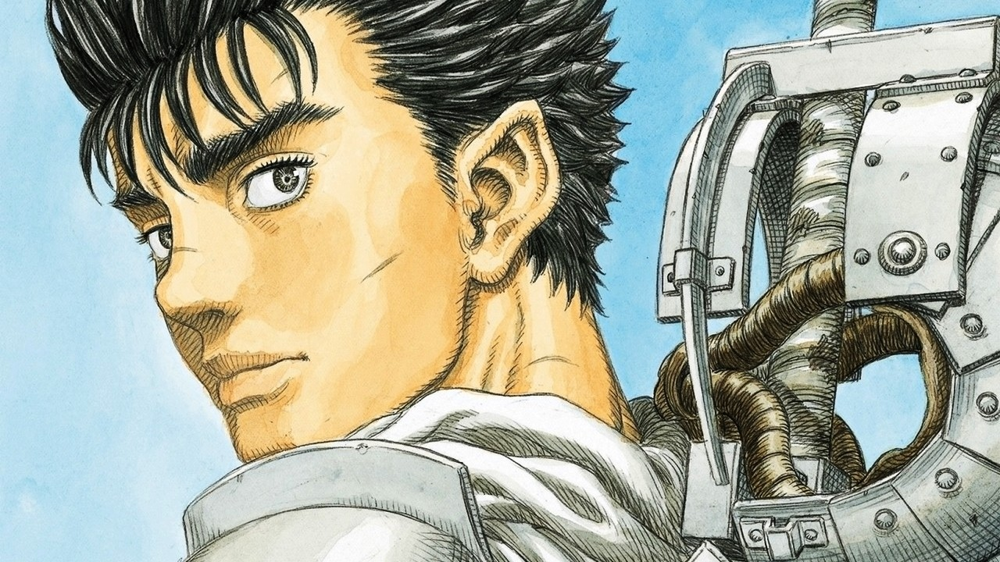
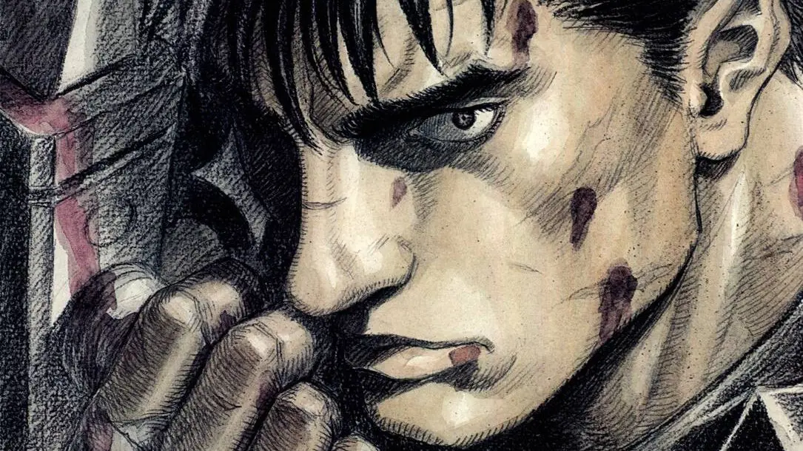
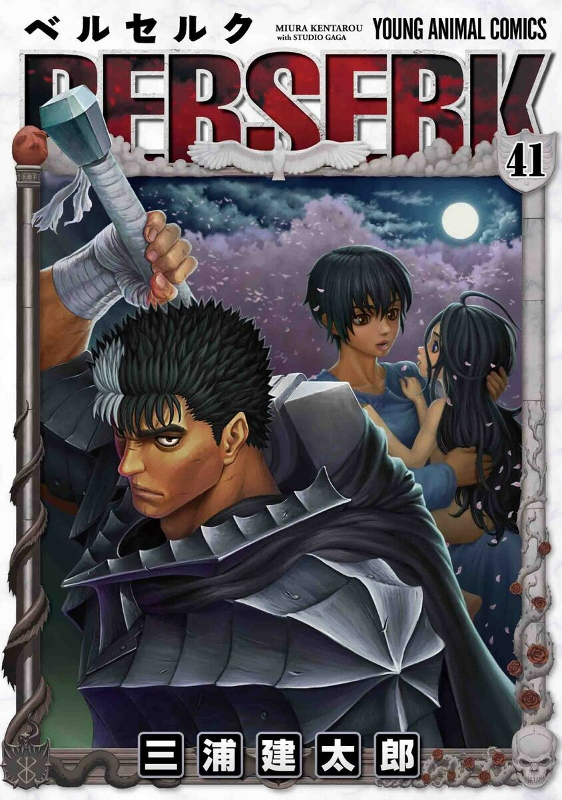
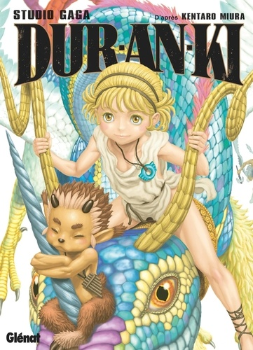
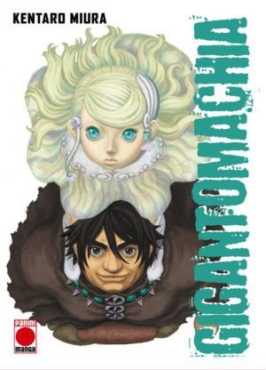

Kentaro Miura nació el 11 de julio de 1966 en Chiba (Japón). La afición al mundo artístico le vino de sangre, ya que su padre trabajaba dibujando storyboards para anuncios publicitarios y su madre era profesora de Arte. No es de extrañar, pues, que el muchacho se matriculase en Bellas Artes.
Pero mucho antes de eso ya apuntaba maneras como mangaka: en 1976 (a sus tiernos 10 añetes) creó su primera obra para sus compañeros de clase, un manga llamado “Miuranger”. En 1982, con 16 años, creó su segunda obra: “Ken e no michi”.
Y a los pocos años –en 1985-, con objeto de ganar algo de dinero para comenzar sus estudios universitarios de Bellas Artes, creó su primera obra profesional y remunerada: “Futatabi”, un manga de ciencia ficción de número único que le valió su primera nominación a un premio: el de Mejor Autor Debutante por la revista “Shukan Shonen Magazine”. Ese mismo año creó para Fresh Magazine una nueva obra de ciencia ficción: “NOA”.
Pero fue en 1988 donde se dio el mayor hito de su carrera: creó “Berserk: The prototype” para la revista “Gekkan KomiKomi”. El éxito de ese personaje le permitió, al año siguiente y tras terminar su doctorado, continuar dedicándose a la profesión con este personaje, publicando en la revista “Animal House” el resto de la saga Berserk (el primer tomo quedó concluido en 1989).
Kentaro Miura
(三浦建太郎) Miura Kentarō
Informacación
Género:
Maculino
Ocupación
Mangaka

Tras 31 tomos de Slam Dunk, Inoue realizó una obra también centrada en el baloncesto, pero de un corte futurista, llamada Buzzer Beater. También realizó varias obras cortas, entre las que destaca Piercing. Sin embargo, no consiguió otro gran éxito hasta que comenzó a publicar Vagabond, una historia basada en la vida de Musashi Miyamoto, un guerrero legendario japonés, que sigue publicando actualmente. Alterna la publicación de esta obra con Real, centrada en el mundo del baloncesto en silla de ruedas. Actualmente Inoue es uno de los mangakas más importantes y respetados de la industria.

Obras

Titulo
Berserk
Género
acción y fantasía oscura
Guión
Kentaro Miura
Dibujo y Entintado
Kentaro Miura
Sinopsis
La historia está ambientada en una época con tintes de la Europa medieval y renacentista, en la cual se cuenta la vida de Guts (cuyo nombre fue traducido como Gatsu en las primeras ediciones en castellano), un mercenario huérfano que acompañado del elfo Puck, caza seres demoníacos llamados apóstoles.

Titulo
Duranki
Género
seinen, acción, fantasía y costumbrismo.
Guión
Kentaro Miura
Dibujo y Entintado
Kentaro Miura
Sinopsis
Según la antigua leyenda, en tiempos remotos, el hombre fue creado del barro por manos divinas…
Del espacio entre el cielo y la tierra surgió una criatura que no era ser humano ni deidad y recibió un nombre de dragón, Usumgal. Usum creció en el monte Nisir, bajo tutela del anciano matrimonio guardián del monte, ayudando a crear utensilios para ayudar en su vida cotidiana. Un día, conoce a unos jóvenes de una villa, ¡y la narración se acelera…! Con el mundo antiguo como escenario y fuente de sabiduría, ¡se construye una nueva leyenda!.
KatsujiYashima, un yakuza enamorado perdidamente a primera vista de la guapa reportera televisiva YukaKatsuragi, decide seguir sus pasos, acompañado de su esbirro, hasta Barcelona. De repente, la tierra tiembla. Tras caer al fondo de un abismo, Yashima y sus acompañantes escuchan las profecías de una vieja inquietante, que afirma que el próspero y rico Japón va a desaparecer: correrá la misma suerte que la floreciente nación de Cartago, que fue arrasada hace siglos. Yashima, Yuka, el esbirro y cuatro adolescentes que estaban de viaje en el lugar expresan su incredulidad. La vieja, contrariada, los envía al mundo del futuro.

Titulo
Gigantomachia
Género
aventura, comedia, drama, seinen, tragedia
Guión
Kentaro Miura
Dibujo y Entintado
Kentaro Miura
Sinopsis
100 millones de años después de la Gran Destrucción, la vida se cierne en las tierras baldías con seres humanos, semihumanos y criaturas que luchan por la supervivencia. Con el Imperio del Olimpo utilizando bestias colosales para aplastar a sus adversarios, solo el gladiador Delos, el místico Prome y el titán Gohra pueden esperar detener el genocidio y salvar a la destrozada Tierra.